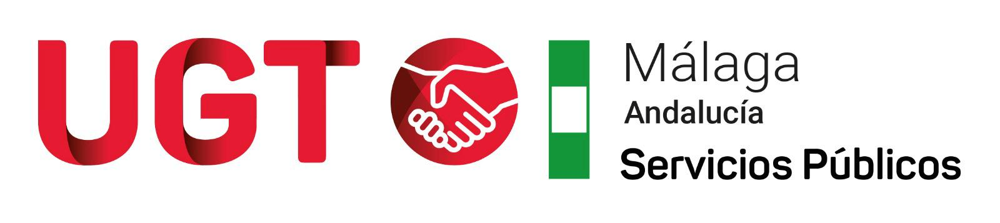

Propuesta de Instrucción Interna de Jornada, Horario y Condiciones de Trabajo del PTGAS
Análisis artículo a artículo
Análisis de los 39 artículos y disposiciones de la propuesta. Pulsa cualquier ficha para leer el texto literal del Rectorado.
La nueva redacción define formalmente el objeto de la norma incorporando expresamente el control horario y la prestación de servicios fuera de la jornada ordinaria como materias reguladas. Sin embargo, no menciona el teletrabajo en este artículo inicial, a pesar de regularlo más adelante en el Art. 9.
Desde la perspectiva sindical, que la prestación de servicios fuera de jornada figure explícitamente en el objeto formaliza una materia delicada que requiere máximas garantías para asegurar que toda disponibilidad quede debidamente compensada.
Aplica exclusivamente al PTGAS con cargo al Capítulo I del presupuesto. Sin variación respecto a 2017. La Disposición Transitoria extiende la misma Instrucción al personal del Capítulo VI que ocupa puestos del Plan Extraordinario de Integración en la RPT, hasta la ejecución del Plan.
Se vigilará que no se use la referencia al Capítulo I para excluir colectivos que, en la práctica, realizan las mismas funciones que el personal estable.
Este artículo nuevo consagra seis principios: garantía del servicio, respeto a los derechos, planificación proporcional, reducción de servicios extraordinarios, igualdad de trato y seguridad jurídica, transparencia y trazabilidad.
Desde la perspectiva sindical, es una herramienta valiosa: cuando se deniegue un permiso, apele a "necesidades del servicio" sin justificación, o aplique la norma de forma desigual entre personas, pueden invocarse estos principios para reclamar. Convierte decisiones discrecionales en decisiones impugnables.
Formaliza que es el órgano que tenga atribuidas las competencias en materia de PTGAS (no los responsables de servicio) quien dicta las instrucciones de aplicación, autoriza los supuestos previstos y resuelve las incidencias que excedan de la gestión ordinaria (Art. 4.1). Los responsables de Centros, Servicios y Unidades organizan la prestación del servicio y la planificación de vacaciones, permisos y compensaciones (Art. 4.2).
⚠ Riesgo latente — Art. 4.3: la concesión de derechos "estará condicionada, cuando así proceda, a las necesidades del servicio". La obligación de valoración motivada, proporcionada y respetuosa es positiva, pero la cláusula introduce una condicionalidad genérica sobre todos los derechos de la Instrucción. Sin la CIVI (véase ficha correspondiente) que controle su aplicación, este apartado puede usarse como cobertura formal para denegar cualquier derecho invocando "necesidades del servicio" sin más consecuencias que tener que dar un motivo por escrito.
Las 35 horas semanales de trabajo efectivo se mantienen como derecho consolidado (Art. 5.1). La pausa de 30 minutos diaria se recoge en el Art. 5.4 y se sigue considerando tiempo efectivo de trabajo.
Circuló una alarma sindical porque la tabla de correspondencia del rectorado no lo mencionaba explícitamente. Se ha verificado en el texto: el derecho existe y está bien situado. Lo que cambió fue la reordenación estructural de artículos, no el contenido. Sin embargo, se vigilará que la pausa no se supedite a "las necesidades del servicio" de forma que se haga ilusoria en la práctica.
Turnos y presencia obligatoria de mañana y tarde se mantienen igual que en 2017 (mañana 8-15h, presencia 9-14h; tarde 15-22h, presencia 16-21h). Verificado.
⚠ Pérdida real para la jornada partida (Art. 6.1.c). En 2017 la tarde era flexible: las dos horas de tarde "que en cada caso se establezca" solo tenían que "comenzar, al menos, a las 15:00", de modo que el tramo podía situarse en una banda amplia a partir de esa hora (p.ej. 15:00–17:00). La propuesta cierra ese margen fijando el tramo en 16:00–18:00 sin posibilidad de variación individual. Modificarlo solo es posible "excepcionalmente y por causas motivadas" y, además, la petición no la puede hacer el propio trabajador: debe hacerla el Centro, Servicio o Unidad, con autorización del órgano competente en materia de PTGAS. Es decir, se pierde tanto la hora de flexibilidad (15–16h) como la posibilidad de situar ese tramo de forma flexible: ahora queda fijado y su modificación depende de una petición del Centro y de la autorización de ese órgano. Afecta especialmente a quienes usaban ese tramo para conciliar (recogida de hijos, citas, etc.).
⚠ Segundo recorte en jornada partida: desaparece la protección de lunes a jueves. El texto de 2017 (Art. 4.1) establecía expresamente que el horario de tarde en jornada partida "tendrá efecto de lunes a jueves". En 2026 esa limitación no existe en ningún artículo, lo que permitiría al Centro fijar el turno de tarde también en viernes, sin que el trabajador tenga base textual para oponerse.
El Art. 8 regula la franja flexible (el tiempo fuera de la presencia obligatoria). Las horas no trabajadas en esa franja son "tiempo recuperable" y deben saldarse antes del 31 de diciembre. El saldo negativo puede recuperarse en los tres primeros meses del año siguiente, pero "en los términos que establezca el órgano competente en materia de PTGAS" — es decir, es ese órgano quien fija las condiciones.
El problema más grave está en el Art. 8.5: el saldo positivo (horas trabajadas de más) solo se puede compensar en el primer trimestre del año siguiente "previa autorización del órgano competente". En 2017 (Art. 3.4) la compensación ya era excepcional ("excepcionalmente, el saldo positivo… podrá ser compensado durante el primer trimestre"), pero no exigía autorización. Ahora requiere la autorización expresa del órgano competente: sin ella, las horas trabajadas de más pueden quedar sin compensar.
⚠ Desaparecen dos garantías expresas de 2017. El Art. 3.2.b de 2017 establecía: "Todo el personal podrá hacer uso de este tiempo flexible, sin excepción de ningún colectivo". El Art. 3.5 añadía que la parte flexible y el tiempo recuperable se cumplirían "respetando las condiciones más beneficiosas para el personal". Ninguna de las dos frases figura en 2026. En su lugar, el Art. 8.3 supedita la recuperación a "las necesidades del servicio y… la organización establecida por la persona responsable", y el Art. 7.5 permite autorizar franjas de presencia obligatoria distintas para un Centro, Unidad o colectivo sin negociación previa.
Primera regulación formal del teletrabajo en la Instrucción. El personal en teletrabajo tiene idénticos derechos y obligaciones que el presencial: mismo régimen de jornada, presencia obligatoria, permisos y control horario. Durante las horas de presencia obligatoria debe estar disponible por medios electrónicos.
Remisión a la normativa propia: el artículo se aplica "sin perjuicio de las especialidades establecidas en la normativa reguladora del teletrabajo en la Universidad de Málaga". Esa normativa existe: el Reglamento 10/2024, de 23 de julio, por el que se regula el teletrabajo para el PTGAS de la UMA, aprobado por el Consejo de Gobierno tras negociación con la representación del personal. El acceso al teletrabajo y sus condiciones se rigen por ese Reglamento; el Art. 9 solo fija que la jornada, la flexibilidad, la presencia obligatoria, los permisos y el control horario son los mismos que en el trabajo presencial.
El Art. 10 garantiza explícitamente solo julio y agosto a 5 horas diarias. Igual que en 2017 (Art. 15.1, del 1 de julio al 31 de agosto). La novedad es el Art. 10.2, que permite extender el horario reducido a otros periodos como facultad del Rector: "mediante Resolución Rectoral se podrá disponer la aplicación de horario reducido a los periodos que se determinen".
Cualquier periodo adicional depende de que el Rector dicte la Resolución cada curso: el trabajador no tiene un derecho exigible a él. Recoger esa posibilidad en el articulado es una novedad positiva, pero no garantiza su aplicación.
Práctica reciente (verificada). Por Resolución del Rector se ha aplicado un periodo más amplio que el de la Instrucción: del 16 de junio al 15 de septiembre de 2024 (Resolución de 27 de mayo de 2024, que lo califica de "recuperar la reducción de jornada") y del 16 de junio al 8 de septiembre de 2025 (Resolución de 6 de junio de 2025), mediante una bolsa de horas. Con la propuesta, solo julio y agosto quedarían garantizados en el articulado.
Además, el Art. 10.5 prohíbe acumular la reducción de verano con la reducción por edad, lo que afecta específicamente a trabajadores mayores de 60 años.
Se mantiene el horario general de atención: mañana 9-14h, tarde 16-21h. En periodos no lectivos, solo mañana. La novedad es que cualquier modificación del horario de atención al público debe comunicarse, para su autorización, al órgano competente en materia de personal, que lo traslada a la Junta de PTGAS y al Comité de Empresa. En 2017 (Art. 4.2) los horarios de atención se comunicaban a la CIVI, de composición paritaria; ahora la información va directamente a los órganos de representación.
Cualquier horario especial (HE) requiere negociación previa con la Junta de Personal o el Comité de Empresa, según proceda (Art. 12). El texto exige negociación, no acuerdo: la representación debe ser oída antes de implantarlo.
⚠ Recorte: el personal en horario especial queda fuera del régimen de exceso de jornada. El Art. 12 añade: "En estos supuestos, no resultará de aplicación la regulación específica relativa al exceso de jornada." En 2017 (Art. 25) la compensación por exceso de jornada no excluía a ningún colectivo. Con la redacción de 2026, quien tenga asignado un HE no tendría base textual para reclamar la compensación del Art. 14.3 (2h por hora o 22 €/hora).
El Art. 13.5 añade una frase que no existía en 2017: "El incumplimiento de la obligación de registro horario podrá dar lugar a las responsabilidades disciplinarias que correspondan." No fichar —aunque hayas trabajado las horas— puede acarrear expediente disciplinario.
Combinado con el endurecimiento del saldo positivo (Art. 8.5), el sistema de control horario se convierte en un instrumento de presión bidireccional: si no fichas bien, te sancionan; si acumulas saldo positivo, dependes de que te lo autoricen. En centros donde el sistema de fichaje falla o no está instalado correctamente, el trabajador queda en situación de indefensión.
El Art. 13.2 recoge que no es necesario registrar la pausa diaria de 30 min (regulada en el Art. 5), y el sistema de control horario (Art. 13.4) deberá permitir verificar el cumplimiento de la jornada, el uso del horario flexible, las compensaciones y las prestaciones fuera de jornada.
La compensación económica por exceso de jornada sube de 20 € a 22 €/hora (+10%). El exceso de al menos dos horas con desplazamiento fuera de la localidad sube de 60 € a 66 €/día. Para trabajos para entidades externas: 30 €/hora con mínimo de 90 €.
Los primeros 30 anuales (o 100 para "mayor dedicación") siguen siendo obligatoriamente exigibles por el responsable de servicio y se compensan solo en tiempo (2h por cada hora realizada, Art. 14.1 y 14.2). Esto no es voluntario: el empleador puede ordenarlo. A partir de ese límite, la voluntariedad sí se garantiza expresamente.
Las horas a partir de las 22:00 se compensan a razón de 2,5h por cada hora trabajada, pero requieren autorización previa del órgano competente en materia de PTGAS. Sin esa autorización, la compensación puede no reconocerse.
⚠ Recorte puntual: la disponibilidad ordinaria puede exigirse 30 minutos más tarde. En 2017 (Art. 21.1) el margen de exigibilidad era de 8:00 a 21:30h. En 2026 (Art. 14.1) se amplía hasta las 22:00h. Esos 30 minutos adicionales permiten al responsable de servicio demandar disponibilidad media hora más tarde, sin que el trabajador pueda negarse dentro de las 30h anuales obligatorias.
Lo que fija el acuerdo autonómico y lo que decide la UMA. El Art. 14.1 se ampara en el Acuerdo para la percepción del complemento de homologación del PAS de las Universidades Públicas Andaluzas. Su apartado séptimo establece "una disponibilidad de 30 horas anuales, fuera de su jornada… sin perjuicio de su compensación a razón de 1 hora y 45 minutos por cada hora realizada", sin fijar franja horaria. Por tanto, la franja de exigibilidad (8:00–21:30 en 2017, 8:00–22:00 en 2026) y las 100 horas de mayor dedicación son regulación propia de la UMA: ampliar la franja hasta las 22:00 es una decisión de la Universidad, no una exigencia del acuerdo. La compensación de 2 horas por hora que mantiene la UMA mejora la del acuerdo (1 h 45 min).
⚠ Recorte: desaparece la elección del trabajador entre descanso o dinero. En 2017 (Art. 25) el exceso por encima de la disponibilidad se compensaba con "dos horas por cada hora trabajada o 20 €/hora, a elección del empleado o empleada pública". En 2026 (Art. 14.3.a) el texto dice solo "con dos horas por cada hora trabajada o 22 €/hora", sin indicar quién elige la modalidad.
Los trabajos en inauguraciones, ferias, exposiciones, actos académicos y similares se compensan, con carácter general, en tiempo a razón de 2 horas por cada hora trabajada (Art. 15.1). Esta compensación en tiempo es la novedad respecto a 2017, donde el Art. 26 solo preveía pago en dinero. Solo cuando por causa justificada no sea posible compensar en tiempo, se retribuye como indemnización por asistencias a razón de 66 €/día (Art. 15.2), o la parte proporcional si el trabajo no alcanza las 3 horas diarias. Ese importe sube desde los 60 €/día de 2017 (+10%).
La participación es voluntaria y requiere aceptación expresa del trabajador. Esto no es nuevo: ya figuraba en el Art. 26 de 2017.
⚠ Recorte: el informe previo de la representación pasa a ser mera información. En 2017 (Art. 26) era requisito para considerar la actividad como servicio extraordinario el "2º Informe del Comité de Empresa y/o Junta de Personal". En 2026 (Art. 15.3) el Comité y la Junta solo "serán informados de la realización de estas actividades, así como del coste de personal necesario para las mismas".
⚠ Recorte: se reduce el ámbito de aplicación. En 2026 solo se incluyen los trabajos "que no se correspondan con las funciones ordinarias del puesto de trabajo" y "que no se encuentren recogidas por los horarios especiales". Además, desaparecen las mudanzas, que figuraban expresamente en la lista de 2017.
Las horas extraordinarias urgentes (aquellas que si no se realizan podrían paralizar la docencia, causar averías graves o poner en riesgo a personas) se compensan en tiempo (2h por 1h) o excepcionalmente en dinero: 22 €/hora (antes 20 €). La orden solo puede venir del órgano competente en PTGAS, a propuesta del responsable del servicio, y se pone en conocimiento inmediato de la persona afectada y del órgano de representación (Comité de Empresa o Junta de Personal).
El carácter urgente está definido taxativamente en 3 supuestos. Cualquier uso fuera de esos supuestos es impugnable, ya que "con carácter general queda prohibida la realización de horas extraordinarias".
La subida es la más significativa del capítulo económico: +18% en todas las modalidades. Con descanso: 39,26 €. Mañana sin descanso: 78,54 €. Tarde/festivo sin descanso: 94,27 €.
El principio de voluntariedad queda expresamente garantizado: el trabajador elige participar o no, y la elección se realiza entre quienes sean de la categoría, centro o unidad por turnos rotatorios. Nadie puede ser obligado a trabajar en sábados o festivos.
Mejora adicional: el descanso compensatorio puede disfrutarse hasta el 1 de abril del año siguiente (antes 1 de marzo), dando un mes más de margen.
⚠ Redacción ambigua — festivo trabajado por la mañana. En 2017 (Art. 25) las tarifas sin descanso eran "sábado en horario de mañana" (66,31 €) y "sábado en horario de tarde o festivo" (79,58 €): un festivo cobraba siempre la tarifa superior. En 2026 (Art. 17.2) la palabra "festivo" aparece en dos tarifas: la b) "sábado, domingo o festivo en horario de mañana sin descanso: 78,54 €" y la c) "sábado, domingo o festivo en horario de tarde o festivo sin descanso: 94,27 €". Comprobado en el PDF original de la propuesta (página 11). Con esta redacción, un festivo trabajado por la mañana podría liquidarse a la tarifa inferior.
El Art. 18 incorpora una novedad: el calendario laboral fijará los días en que todos los centros cierren por "criterios de eficiencia energética", manteniendo los servicios esenciales. El personal que deba trabajar esos servicios esenciales recibe días de libre disposición equivalentes.
Lo positivo: el Art. 18.2 obliga a aprobar el calendario "previo proceso de negociación" en la Mesa Sectorial de Negociación del PTGAS (Reglamento 3/2024). Es decir, la representación sindical participa en la negociación del calendario cada año.
El problema real: el texto no fija un número máximo de días de cierre energético al año. "Negociar" no es lo mismo que "acordar": si no hay acuerdo en Mesa, el Consejo de Gobierno aprueba igualmente el calendario. Sin un tope escrito, el número de cierres queda de facto en manos del Rectorado.
Se mantiene el permiso por la Apertura de Curso y Santo Tomás de Aquino ("cuando en el calendario laboral tengan la consideración de laborables") y el carácter no laborable del día del Patrón del Centro, con un día de descanso de libre disposición si hay que trabajar. El personal de Servicios Centrales sin Patrón propio tiene como referencia el 7 de diciembre (trasladable si cae en festivo o sábado).
Cambios respecto a 2017: (1) desaparece el requisito del Art. 5.5 de 2017, que vinculaba estos permisos a la participación en el programa de evaluación del desempeño (mejora); (2) el Art. 19.2 añade que "los servicios deberán permanecer abiertos al público", con el personal indispensable que determinen los responsables.
Se mantienen los 22 días hábiles base con escala por antigüedad (hasta 26 días con 30+ años). Los cinco artículos de 2017 (Arts. 16 a 20) se unifican en uno.
La regla de que, si una incapacidad temporal impide disfrutar las vacaciones, pueden disfrutarse después siempre que no hayan transcurrido más de 18 meses desde el final del año en que se generaron (Art. 20.6) ya figuraba en 2017 (Art. 19.2). Solo se actualiza la denominación de los permisos ("nacimiento y cuidado de menor" en lugar de maternidad o paternidad).
Artículo introductorio del Título IV, con dos apartados. El 21.1 establece que el personal "tendrá derecho" a la reducción de jornada en los supuestos del Título. El 21.2 exige solicitud de la persona interesada indicando la modalidad y la fecha de inicio, con la documentación acreditativa.
No regula incompatibilidades ni el cómputo entre reducciones: esas reglas siguen en cada artículo (por ejemplo, la incompatibilidad del horario de verano con la reducción por edad está en el Art. 10.5).
Dos mejoras concretas: (1) En 2017 la reducción con el 80% o el 60% de las retribuciones solo cubría a menores de 9 años; de 9 a 12 se podía reducir jornada pero con reducción proporcional del sueldo (Art. 14.1). En 2026 el 80% / 60% se aplica hasta los 12 años, hasta el 31 de julio del curso en que los cumple. (2) En 2017 el mismo derecho se reconocía para el cuidado de una persona mayor que requiera especial dedicación o de una persona con discapacidad (Art. 14.2). En 2026 se añade el cuidado de un familiar hasta el 2.º grado que, por edad, accidente o enfermedad, no pueda valerse por sí mismo (Art. 22.2).
Requisito nuevo (Art. 22.4): la reducción debe solicitarse con al menos quince días de antelación, y con la misma antelación debe comunicarse la vuelta a la jornada ordinaria.
La reducción puede ser de un tercio (80% del sueldo) o de la mitad (60% del sueldo). El trabajador elige. El responsable de servicio no puede imponer la modalidad de reducción.
Se mantienen cuantitativamente las 28 horas anuales de bolsa de conciliación (o hasta 4 días acumulables a asuntos particulares). Sin embargo, el rectorado añade un condicionante restrictivo que no existía en 2017: la franja de presencia obligatoria (9:00 a 14:00) no podrá alterarse salvo que lo permitan las «necesidades del servicio» y cuente con el «visto bueno de la persona responsable».
Esto convierte un derecho concebido para conciliar en una concesión discrecional en el tramo horario donde habitualmente más se necesita (tutorías, citas médicas familiares, trámites de dependencia).
La reforma más notable para el colectivo senior: a los 60 años la reducción diaria se duplica de 30 minutos a 1 hora; el texto, como el de 2017, no prevé reducción de retribuciones. La escala completa: 60 y 61 años → 1 hora; 62 años → 1,5 horas; 63+ hasta jubilación → 2 horas. Esta reducción se aplica en la parte flexible del horario, sin afectar al tramo de presencia obligatoria.
⚠ Límite: prórroga voluntaria tras la jubilación (Art. 24.2). Quien alcanza la edad de jubilación y se acoge a la prórroga voluntaria de permanencia en servicio activo —posible hasta los 70 años conforme a la normativa básica— pierde todas las reducciones acumuladas del apartado anterior. Desde el inicio de la prórroga se vuelve a jornada completa, sin reducción alguna por edad.
Para personas con discapacidad igual o superior al 45% con derecho a jubilación anticipada (RD 1851/2009): escala paralela durante los 5 años previos a la jubilación anticipada, con las mismas cuantías, a solicitud con un mes de antelación, en servicio activo a tiempo completo y sin compatibilidad autorizada (Art. 24.3 y 24.4). El Art. 24.5 añade una reducción de una hora diaria para quienes estén en el ámbito de ese Real Decreto, que es supletoria respecto a la adaptación del puesto del art. 40 del Real Decreto Legislativo 1/2013 (Art. 24.6).
Tras finalizar tratamiento de radioterapia, quimioterapia u otro tratamiento de especial gravedad, el trabajador puede solicitar reincorporación con jornada reducida manteniendo el 100% de las retribuciones. Solo disponible durante el primer mes tras el alta médica.
El esquema de reducción es progresivo: 50% las dos primeras semanas, 20% la tercera, 10% hasta el final del mes. El objetivo es que la reincorporación sea gradual, sin pérdida de retribuciones.
No estaba en 2017 en ninguna forma. Es un derecho completamente nuevo; se pedirá extender su duración.
Los permisos son derechos individuales vinculados al hecho causante, no gracias discrecionales. El Art. 26.3 es clave: cuando la Instrucción establezca condiciones más favorables que la normativa básica, se aplican las de la Instrucción. Y el Art. 26.5 establece que en caso de conflicto entre normas, prevalece la más favorable al personal.
Este artículo es una herramienta poderosa: cualquier denegación de permiso que no respete las condiciones de la Instrucción puede impugnarse invocando este artículo. La remisión a la normativa básica estatal como supletoria (EBEP) también protege al trabajador cuando la Instrucción guarde silencio.
El Art. 27.3 establece que la denegación o limitación de un permiso "deberá ser expresa y motivada". En 2017 este requisito no estaba explícito. Ahora, una denegación sin motivación incumple expresamente la Instrucción y puede recurrirse por ese motivo.
El Art. 27.2 mantiene la regla de que los permisos se entienden concedidos salvo comunicación en contrario (que ya recogía el Art. 12 de 2017): si el responsable no responde, el permiso se entiende otorgado. Combinada con la nueva exigencia de motivación, impide que la falta de respuesta se interprete como denegación.
La combinación del Art. 26 (principios) y el Art. 27 (procedimiento) constituye una base sólida para recurrir cualquier denegación arbitraria.
Hospitalización/enfermedad grave: De 3 a 5 días hábiles para cónyuge, pareja de hecho o parientes hasta 1.º grado + conviviente. Para 2.º grado, 4 días hábiles (en 2017 eran 2 días en la misma localidad y 4 en distinta; ahora son 4 con independencia de la localidad). El permiso puede disfrutarse en días alternos mientras persista la situación.
Mudanza: 1 día si es en la misma localidad, 2 días si implica cambio de localidad (antes siempre era 1 día).
Fallecimiento (Art. 28.2): 3 días hábiles (1.º grado, misma localidad) o 5 (distinta localidad); 2 o 4 días para 2.º grado.
Asuntos particulares: 6 días al año + adicionales por trienios (desde el 6.º). Los no disfrutados pueden usarse hasta el 1 de abril del año siguiente, con límite de 3 días.
Nuevo permiso — donación de órganos o tejidos (Art. 28.14): por el tiempo indispensable.
⚠ Recorte — pruebas internas de la UMA (Art. 28.5). En 2017 (Art. 10.4) el permiso para "exámenes oficiales y demás pruebas definitivas de aptitud" cubría "los días de su celebración". En 2026 se mantiene esa regla para exámenes en centros oficiales, pero se añade: "La concurrencia a pruebas celebradas en la Universidad de Málaga para la provisión de puestos de trabajos de la RPT será por el tiempo indispensable de las mismas". Para los procesos internos de la propia UMA se pasa del día completo al tiempo estricto de la prueba.
⚠ Alerta — descanso de Navidad (Art. 28.15): pérdida de derechos en ciertos años. En 2017 era "descanso entre el 24 de diciembre y el 6 de enero, ambos inclusive" — bloque continuo garantizado, la universidad cerraba para todos. Ahora son 5 días hábiles + los días 24 y 31, sujetos a turnos establecidos por el órgano competente. El contador de 5 días puede quedarse corto por la siguiente razón matemática: el 25 de diciembre y el 1 de enero siempre caen en el mismo día de la semana (están exactamente 7 días separados). Cuando ambos son domingo (como en 2022–2023 y ocurrirá en 2033–2034), ambos se trasladan al lunes siguiente: el 26 de diciembre y el 2 de enero pasan a ser festivos. Resultado: el bloque residual (27–30 dic + 3–5 ene) suma 7 días laborables pero el nuevo artículo solo garantiza 5, dejando el 4 y 5 de enero como días laborables sin cobertura — pérdida neta de 2 días respecto al bloque de 2017. Además, la palabra "turnos" permite escalonar el descanso entre trabajadores, rompiendo el cierre universal que existía antes.
Caso más próximo: Navidad 2027–2028. Según el Decreto 84/2026 (BOJA núm. 84, de 5 de mayo de 2026), el 25 de diciembre de 2027 cae en sábado y no se traslada: solo se trasladan al lunes los festivos que coinciden con domingo. Con el bloque de 2017, entre el 24 de diciembre y el 6 de enero habría 9 días laborables de descanso (24, 27, 28, 29, 30 y 31 de diciembre, y 3, 4 y 5 de enero). Con el Art. 28.15 serían 7 (5 días hábiles más el 24 y el 31). El cómputo de enero de 2028 depende del decreto de fiestas de ese año, aún no publicado.
Origen del nuevo texto y efecto sobre el calendario. La redacción del Art. 28.15 reproduce casi literalmente el art. 33.1 del IV Convenio Colectivo del Personal Laboral de las Universidades Públicas de Andalucía ("cinco días hábiles durante las festividades de Navidad y a cuatro durante la Semana Santa, Feria…, de acuerdo con los turnos establecidos por la Gerencia"). Los calendarios laborales del PTGAS de 2025 y 2026 aprueban los cierres del 24 al 31 de diciembre, del 1 al 5 de enero y de Semana Santa "de conformidad con lo establecido en el artículo 5.3 de la Instrucción Interna". Ese artículo desaparece en 2026, de modo que los próximos calendarios perderían la base normativa del cierre.
⚠ Asuntos particulares y "vacaciones obligatorias" (Art. 28.11). En 2017 (Art. 10.10.d) los días de asuntos particulares podían acumularse "a los días de vacaciones". En 2026 solo "a los días de vacaciones obligatorias". El calendario laboral del PTGAS fija como periodo general de vacaciones un bloque de agosto (del 4 al 22 en 2025; del 3 al 21 en 2026). Con la nueva redacción, los asuntos particulares solo podrían unirse a ese bloque y no a otros periodos de vacaciones.
Progenitor diferente de la madre biológica: De 15 días (normativa anterior) a 19 semanas, individual e intransferible (Art. 29.3). En monoparentalidad: 32 semanas. Ampliaciones: +2 semanas para ambos progenitores si el hijo tiene discapacidad, y +1 semana por cada hijo adicional (por progenitor) en parto múltiple.
Hijo con cáncer o enfermedad grave (Art. 29.7): No es un permiso de días, sino una reducción de al menos la mitad de la jornada cobrando el 100% del sueldo, para cuidar al hijo hospitalizado. Se mantiene hasta los 23 años (aunque cumpla 18 durante el tratamiento) y hasta los 26 años si hay discapacidad ≥65%. Uno de los mejores derechos del texto.
⚠ Recorte — desaparecen las 4 semanas adicionales (Art. 29.4). En 2017 (Art. 13.a y 13.b) el permiso por parto y el de adopción o acogimiento eran de "dieciséis semanas ininterrumpidas, y cuatro semanas ininterrumpidas más adicionales": 20 semanas en total. En 2026 el permiso es de 19 semanas (Art. 29.1 y 29.2), y el Art. 29.4 reconoce un "permiso adicional retribuido" cuya duración remite a "la normativa vigente que resulte de aplicación en cada momento". Ninguna norma de las consultadas fija ese permiso para el PTGAS de la UMA:
- Las 4 semanas proceden del Decreto 347/2003 de la Junta (apartado 1.5), que se aplica al personal de la Administración General de la Junta de Andalucía.
- La Ley 5/2023 de Función Pública de Andalucía se aplica al PTGAS solo de forma supletoria (art. 3.1.c), y su art. 38 remite a los permisos del EBEP y a los acordados en negociación colectiva.
- El art. 49 del EBEP establece 19 semanas sin permiso adicional posterior.
Según su literalidad, el Art. 29.4 reconoce además el permiso a "ésta", es decir, a la madre biológica, aunque el título del apartado menciona también al otro progenitor. Si la remisión no se concreta, la madre biológica pasa de 20 a 19 semanas. El otro progenitor sí mejora: de 15 días a 19 semanas.
⚠ Omisión — ausencia retribuida por hijo prematuro hospitalizado. El Art. 13.a de 2017 recogía que "por nacimiento de hijos prematuros o que por cualquier otra causa deban permanecer hospitalizados a continuación del parto, la o el empleado público tendrá derecho a ausentarse del trabajo durante un máximo de dos horas diarias percibiendo las retribuciones íntegras", y a reducir la jornada hasta dos horas más con disminución proporcional. El texto de 2026 solo recoge la ampliación del permiso por nacimiento (hasta 13 semanas) y omite estas dos horas diarias. El derecho sigue existiendo por el art. 48.g del EBEP, de aplicación supletoria (Art. 26.5), pero desaparece del texto de la UMA.
⚠ Permiso parental de 8 semanas (Art. 29.5) — no retribuido: Para cuidado de hijos hasta 8 años, disfrutarse a tiempo completo o parcial. El Art. 29.5 lo califica expresamente de "no retribuido": durante esas semanas no se percibe salario. La propuesta recoge el mínimo de la Directiva (UE) 2019/1158 sin mejorarlo. La falta de retribución limita en la práctica su uso, especialmente en los niveles retributivos más bajos. En la normativa consultada (EBEP, Ley 5/2023 de Función Pública de Andalucía, IV Convenio del PAS laboral) no consta ningún régimen de retribución de este permiso, por lo que una mejora en la UMA sería una medida propia de la negociación.
La duración mínima baja de 15 a 7 días naturales, máximo 3 meses. Esto abre la licencia sin sueldo a situaciones cortas (una semana para un asunto personal urgente, acompañar a un familiar, un viaje largo) que antes quedaban excluidas porque no llegaban a 15 días.
La restricción de "una vez cada dos años" existía ya en 2017, con la misma redacción. Según su literalidad, solo opera "siempre y cuando haya agotado el plazo máximo de tal licencia": quien haya disfrutado los tres meses completos no puede volver a solicitarla hasta pasados dos años; las licencias más cortas no activan esa restricción.
Mejora para ausencias sin justificante médico: en 2017 (Art. 8) "solo serán admisibles dos ausencias de hasta tres días, sin justificación médica, al año". En 2026 (Art. 31.1) se admiten tres ausencias, con un máximo de 6 días al año.
⚠ Recorte para ausencias con volante médico: en 2017 el límite se refería solo a las ausencias "sin justificación médica"; las justificadas con volante no tenían tope anual. En 2026 el Art. 31.1 regula conjuntamente las ausencias justificadas con "volante médico o… declaración jurada" y añade: "Por este concepto, no se podrán justificar más de seis días al año. Sólo serán admisibles tres ausencias de este tipo en cada año natural". Según su literalidad, el tope se aplica también cuando existe volante médico. Superado el tope, las ausencias "deducirán… los días de asuntos particulares" o generarán deducción de retribuciones.
El texto prohíbe expresamente que la administración exija al trabajador información sobre el diagnóstico. Solo puede pedir que acredite que ha estado enfermo. La LOPD ya lo prohibía, pero tenerlo en la Instrucción facilita la reclamación si un responsable pregunta.
Art. 32.1: el PTGAS podrá ausentarse por fuerza mayor, por motivos familiares urgentes relacionados con familiares o personas convivientes (enfermedad o accidente que exija su presencia inmediata). Basta una declaración responsable más la acreditación del vínculo familiar. Para ausencias largas hay que usar los permisos ordinarios.
Art. 32.2 (fenómenos atmosféricos): en caso de alerta meteorológica, el artículo no crea un derecho propio: se limita a remitir "a lo previsto en la normativa vigente" y a las directrices de los órganos competentes. Es una cláusula de reenvío sin garantías propias — tras episodios como la DANA, habría sido esperable una regulación más concreta.
⚠ Laguna crítica — retribución sin aclarar: el artículo no dice en ningún momento si estas ausencias son retribuidas ni si se imputan a asuntos particulares. El art. 37.9 del Estatuto de los Trabajadores, introducido por el Real Decreto-ley 5/2023 al transponer la Directiva (UE) 2019/1158, reconoce como retribuidas las ausencias por fuerza mayor equivalentes a cuatro días al año, en el ámbito del personal laboral. Ni el EBEP ni la Ley 5/2023 de Función Pública de Andalucía regulan este permiso para el personal funcionario. El silencio de la Instrucción deja sin aclarar su retribución y si se imputa a asuntos particulares.
Esta disposición define por primera vez en la Instrucción siete términos clave, entre ellos conviviente, persona a cargo, cuidado directo, pareja de hecho, familiar de 1.º y 2.º grado y «requerir especial dedicación». Sin estas definiciones, los permisos del Art. 28 y las reducciones del Cap. IV quedan abiertos a interpretaciones restrictivas por parte de los responsables de servicio.
La "situación de convivencia" es especialmente relevante porque el permiso por accidente, enfermedad grave u hospitalización (Art. 28.1) y las ausencias por fuerza mayor (Art. 32.1) alcanzan a cualquier persona que conviva con el trabajador, sin necesidad de vínculo familiar o matrimonial. Esto protege situaciones muy reales: compañeros de piso dependientes, cuidadores informales, personas mayores que viven con un trabajador sin ser familia.
En 2017 la DA Segunda solo exigía acreditar documentalmente la situación protegida. En 2026 se concreta qué documento corresponde a cada caso: certificado de empadronamiento (convivencia), libro de familia o Registro Civil (parentesco), resolución judicial o documento de acogimiento (guarda legal), certificado oficial (discapacidad) y los medios legales para violencia de género y terrorismo. La DA no prevé la declaración responsable; esta solo aparece en las ausencias por fuerza mayor (Art. 32.1) y la declaración jurada en las ausencias por enfermedad (Art. 31.1).
Cuando una normativa de rango superior (ley estatal, autonómica, EBEP) establezca condiciones más favorables para el PTGAS, podrá incorporarse a la Instrucción previa negociación con los representantes del personal. No opera de forma automática: requiere que UMA negocie con la representación sindical antes de incorporarla.
El derecho a que siempre se aplique la norma más favorable ya está garantizado en el Art. 26.5, con efecto directo e inmediato. Esta DA Tercera regula un mecanismo adicional de incorporación formal al texto de la Instrucción, no la aplicabilidad directa de las normas más ventajosas.
Las cuantías económicas (exceso de jornada, horas urgentes, asistencias, desplazamientos, sábados y festivos) se actualizan anualmente conforme al IPC oficial. Mismo mecanismo que en 2017. Sin esa cláusula, las compensaciones se erosionarían por la inflación sin necesidad de renegociar.
El borrador interno del rectorado (texto MSN) incluía una Disposición Adicional Tercera que reconocía compensación por festivos nacionales o autonómicos que coincidan con sábado. En el texto que llega a negociación esa DA no aparece.
En la práctica, la compensación se viene acordando año a año en el calendario laboral: el de 2025 declaró no laborables el 22 y el 23 de diciembre por coincidir en sábado el 1 de noviembre y el 6 de diciembre, y el de 2026 hace lo mismo por el 28 de febrero y el 15 de agosto. Sin la DA, esa compensación depende de cada calendario y no de una regla de la Instrucción.
La CIVI (Comisión de Interpretación y Vigilancia de la Instrucción) era en 2017 un órgano de composición paritaria (representantes de las secciones sindicales firmantes y el mismo número de la Gerencia) con funciones de "interpretación y actualización de la Instrucción, así como las de recibir información periódica de la aplicación de la misma" (Disposición Transitoria de 2017). Era el cauce previsto para resolver dudas de interpretación como una denegación de permiso, la aplicación del horario de verano o un saldo de horas. En la propuesta 2026, la CIVI desaparece completamente del articulado.
Solo se menciona de pasada en el Preámbulo, sin composición, sin funciones, sin régimen de reuniones, sin garantías jurídicas de ningún tipo. Un preámbulo no tiene valor normativo: no crea derechos ni obligaciones.
Sin CIVI, la única vía para resolver conflictos de aplicación es la vía judicial o el recurso administrativo ordinario, que resulta lento y costoso para el trabajador individual. La CIVI era el cauce interno de interpretación, y su ausencia del articulado reduce las garantías de la parte trabajadora de forma estructural.
Extiende esta Instrucción al personal contratado con cargo al Capítulo VI que ocupa puestos del Plan Extraordinario de Integración en la RPT, aprobado por el Consejo de Gobierno el 27 de mayo de 2026. La cobertura es de aplicación hasta que dicho Plan quede definitivamente ejecutado.
Se trata de una disposición puente: mientras el proceso de integración en la RPT se completa, este personal queda cubierto por los mismos derechos de jornada, horario y permisos que el resto del PTGAS.
La Disposición Derogatoria deja sin efecto la Instrucción vigente, sus modificaciones y "todos aquellos pactos o acuerdos que contravengan lo dispuesto en la misma".
Verificado: esta cláusula es idéntica a la que ya tenía la instrucción de 2017 — es una fórmula estándar, no una novedad que se intente "colar". Aun así, el riesgo es real: al ser un texto nuevo y completo que sustituye al anterior, cualquier acuerdo local o condición más favorable que no quede recogida en el articulado podría entenderse derogada. Como ESTE texto reordena y reescribe todo, es el momento de comprobar qué se queda fuera.